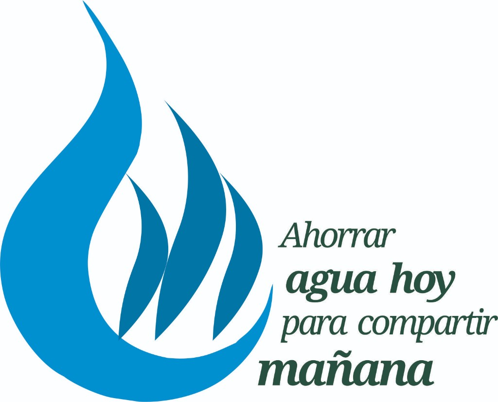
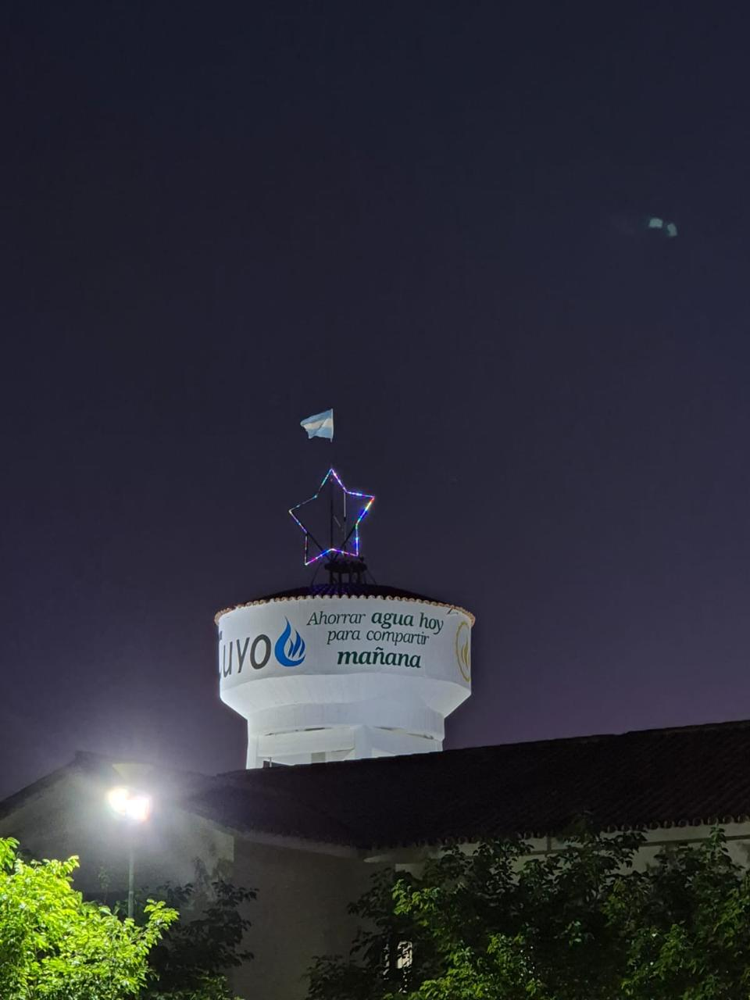
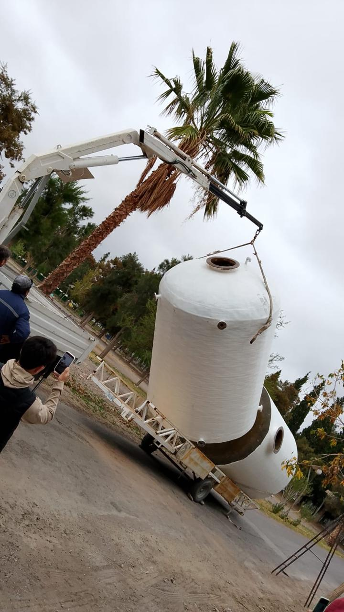

Misión
Promover el conocimiento científico y aplicado, la formación de capacidades y la transferencia a la comunidad sobre el ahorro y el uso responsable del agua, contribuyendo a una cultura hídrica responsable en la UCCuyo y su área de influencia.

Universidad Católica de Cuyo
Programa institucional de la Universidad Católica de Cuyo para el ahorro y el uso responsable del agua: investigación, formación y vinculación con el territorio, con enfoque académico, ético y regional en San Juan.
Director del Plan AURA: Ing. Luis Jiménez · luisjimenez@uccuyo.edu.ar
Identidad
El Plan Integral de Ahorro y Uso Responsable del Agua (Plan AURA) depende de la Universidad Católica de Cuyo, conforme a su resolución de conformación. Articula docencia, investigación y extensión en torno a la gestión sostenible del recurso hídrico en contextos áridos, con especial referencia a la provincia de San Juan.
Promover el conocimiento científico y aplicado, la formación de capacidades y la transferencia a la comunidad sobre el ahorro y el uso responsable del agua, contribuyendo a una cultura hídrica responsable en la UCCuyo y su área de influencia.
Consolidarse como programa referente de la UCCuyo en la gestión sostenible del recurso hídrico, en articulación con el Plan Estratégico Institucional 2023-2027.
Ing. Luis Jiménez
Director del Plan AURA — Universidad Católica de Cuyo
luisjimenez@uccuyo.edu.ar
El Plan desarrolla actividades orientadas a comprender, medir y mejorar el uso del agua en ámbitos institucionales, productivos y comunitarios.
Programa institucional
«Ahorrar agua hoy para compartir mañana»
El Plan Integral de Ahorro y Uso Responsable del Agua (Plan AURA) fue aprobado por la Resolución N.º 418-CS-2024 del Consejo Superior. Reconoce el contexto crítico de escasez hídrica de San Juan y asume el compromiso institucional de la UCCuyo de promover una gestión eficiente, responsable y sostenible del recurso en docencia, investigación y extensión.




«Que el Agua no sea signo de separación, sino de encuentro»
— Papa Francisco
Convocatorias 2026
Convocatoria del Plan Integral AURA de la Universidad Católica de Cuyo (Resoluciones 418-CS-2024, 767-CS-2025 y 849-CS-2026) a presentar proyectos de investigación y proyectos de extensión. Son dos modalidades con plantilla/formulario y carpeta Drive distintas. Destinada a docentes, investigadores, equipos de cátedra, estudiantes avanzados y equipos interdisciplinarios de la UCCuyo · Sede San Juan.
Se presentan en la plantilla oficial Anexo I de la Secretaría de Investigación (DOCX). No usar el formulario de extensión.
Instructivo investigación (PDF) Descargar Anexo I (DOCX) Cargar en Drive · Investigación
Se presentan en el formulario Google Forms de extensión. No usar la plantilla Anexo I de investigación.
Instructivo extensión (PDF) Abrir Google Forms · Extensión Cargar en Drive · Extensión
Revisá el texto completo de la convocatoria, los ejes temáticos y el marco normativo. Descargá las bases y las resoluciones del Consejo Superior que sostienen el Plan AURA.
Armá la propuesta con título, eje temático (a–j), fundamentación, objetivos, equipo, metodología, cronograma, resultados esperados, recursos y vinculación explícita con el Plan AURA.
Requisitos de equipo:
Director/a docente UCCuyo + mín. 2 estudiantes
Con la aprobación del Consejo Directivo, cargá en la carpeta Drive que corresponde a tu modalidad. Luego el Comité Evaluador emite dictamen y se eleva al Consejo Superior.
Circuito:
UA → Drive (según modalidad) → Comité → Consejos → Consejo Superior
Consultas: luisjimenez@uccuyo.edu.ar (Director del Plan AURA) · Instructivo investigación · Instructivo extensión
Marco normativo
Resoluciones del Consejo Superior, instructivos de presentación y plantillas de la convocatoria Plan AURA.
Archivo visual
Obras e imágenes del Plan Integral AURA en la Universidad Católica de Cuyo. Tocá una foto para ampliarla.
Alcance
Estimación del país y, cuando está disponible, de la provincia o región desde donde se consulta el sitio del Plan AURA. Tocá un origen en la lista para enfocarlo en el mapa. El dato es aproximado (geolocalización por IP): no identifica personas ni guarda la dirección IP.
El origen es una estimación por IP. Redes móviles, VPN y campus universitarios pueden desplazar la ubicación estimada.
Comunicación
Universidad Católica de Cuyo · Sede San Juan
Director del Plan AURA: Ingeniero Luis Jiménez
luisjimenez@uccuyo.edu.ar